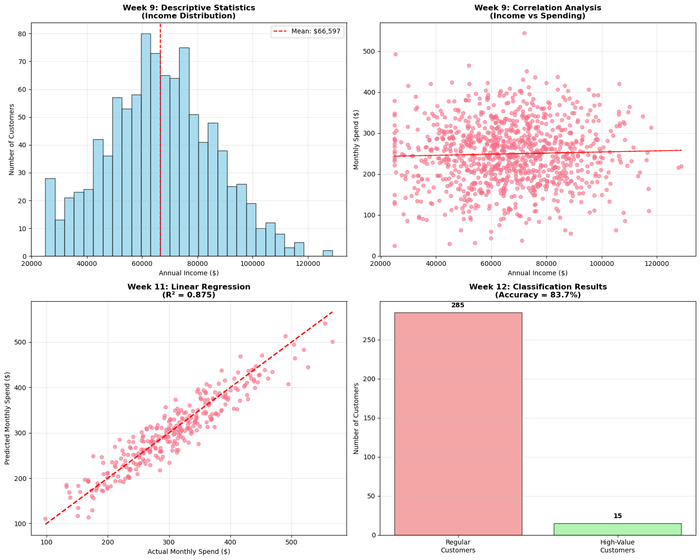
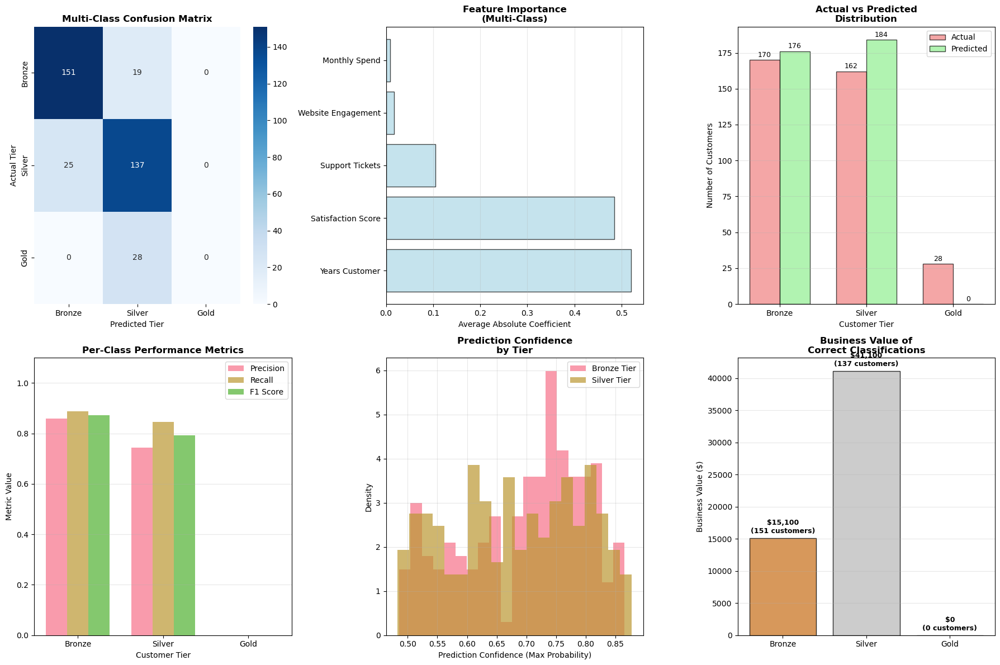

Weeks 1-6: Python fundamentals and data structures
Week 8: Data visualization with Matplotlib
Week 9: Descriptive statistics and exploration
Week 10: Inferential statistics and testing
Week 11: Linear regression and prediction
Week 12: Logistic regression and classification
Today’s Advanced Topics
Feature transformations for non-linear relationships
Polynomial regression for curved patterns
Multi-class classification beyond binary problems
Advanced evaluation metrics and techniques
Exam preparation and concept synthesis
Note
This week consolidates everything you’ve learned while extending your capabilities with advanced modeling techniques!
Part 1: Course Review and Synthesis
The Analytics Journey We’ve Taken
import numpy as npimport pandas as pdimport matplotlib.pyplot as pltimport seaborn as snsfrom sklearn.model_selection import train_test_splitfrom sklearn.linear_model import LinearRegression, LogisticRegressionfrom sklearn.preprocessing import PolynomialFeaturesfrom sklearn.metrics import accuracy_score, classification_report, confusion_matrix, r2_scoreimport warningswarnings.filterwarnings('ignore')# Set professional plotting styleplt.style.use('default')sns.set_palette("husl")print("COMPREHENSIVE COURSE REVIEW")print("="*45)# Create a comprehensive business dataset showcasing all conceptsnp.random.seed(42)n_customers =1000# Generate customer data with realistic business relationshipscustomer_data = pd.DataFrame({'customer_id': range(1001, 1001+ n_customers),'age': np.random.normal(40, 12, n_customers),'income': np.random.normal(65000, 20000, n_customers),'years_customer': np.random.exponential(3, n_customers),'monthly_spend': np.random.normal(250, 75, n_customers),'satisfaction_score': np.random.normal(4.2, 0.8, n_customers),'website_visits': np.random.poisson(8, n_customers),'support_tickets': np.random.poisson(1.5, n_customers)})# Ensure realistic rangescustomer_data['age'] = np.clip(customer_data['age'], 18, 80)customer_data['income'] = np.clip(customer_data['income'], 25000, 150000)customer_data['satisfaction_score'] = np.clip(customer_data['satisfaction_score'], 1, 5)customer_data['years_customer'] = np.clip(customer_data['years_customer'], 0.1, 15)print("Sample Customer Dataset:")print("="*25)print(customer_data.head())print(f"\nDataset Shape: {customer_data.shape}")print(f"Customer ID Range: {customer_data['customer_id'].min()} - {customer_data['customer_id'].max()}")# Week 8 Concept: Data Visualizationprint(f"\nWEEK 8 VISUALIZATION RECAP:")print("="*30)print("✓ Created meaningful business visualizations")print("✓ Matplotlib for professional charts and reports")print("✓ Customized plots for stakeholder communication")print("✓ Storytelling through data visualization")# Week 9 Concept: Descriptive Statisticsprint(f"\nWEEK 9 DESCRIPTIVE STATISTICS RECAP:")print("="*40)desc_stats = customer_data[['age', 'income', 'satisfaction_score']].describe()print("Key Customer Metrics:")print(f" Average Age: {customer_data['age'].mean():.1f} years")print(f" Average Income: ${customer_data['income'].mean():,.0f}")print(f" Average Satisfaction: {customer_data['satisfaction_score'].mean():.2f}/5.0")print(f" Income Std Dev: ${customer_data['income'].std():,.0f}")# Correlation analysiscorrelation = customer_data['income'].corr(customer_data['monthly_spend'])print(f" Income-Spend Correlation: {correlation:.3f}")print("✓ Measured central tendency, variability, and relationships")# Week 10 Concept: Inferential Statistics (simulated)print(f"\nWEEK 10 INFERENTIAL STATISTICS RECAP:")print("="*40)# Simulate a hypothesis test scenariohigh_income = customer_data[customer_data['income'] >75000]['satisfaction_score']low_income = customer_data[customer_data['income'] <=75000]['satisfaction_score']print(f"Satisfaction Comparison by Income Level:")print(f" High Income (>${75000:,}+): {high_income.mean():.2f} average")print(f" Lower Income (≤${75000:,}): {low_income.mean():.2f} average")print(f" Difference: {high_income.mean() - low_income.mean():.3f}")print("✓ Hypothesis testing for business decision making")print("✓ Confidence intervals and statistical significance")print(f"\nCOMPREHENSIVE TOOLKIT ACQUIRED:")print("✓ Python programming for business analytics")print("✓ Data visualization and communication")print("✓ Statistical analysis and hypothesis testing")print("✓ Predictive modeling with regression")print("✓ Classification for categorical decisions")
COMPREHENSIVE COURSE REVIEW
=============================================
Sample Customer Dataset:
=========================
customer_id age income years_customer monthly_spend \
0 1001 45.960570 92987.108732 1.568221 292.984586
1 1002 38.340828 83492.673658 0.204868 116.060013
2 1003 47.772262 66192.607398 1.286910 223.027775
3 1004 58.276358 52061.264446 0.352968 272.583050
4 1005 37.190160 78964.466272 4.954457 263.787589
satisfaction_score website_visits support_tickets
0 4.068532 6 0
1 4.369675 8 3
2 3.405313 8 1
3 3.387297 8 1
4 3.089166 12 0
Dataset Shape: (1000, 8)
Customer ID Range: 1001 - 2000
WEEK 8 VISUALIZATION RECAP:
==============================
✓ Created meaningful business visualizations
✓ Matplotlib for professional charts and reports
✓ Customized plots for stakeholder communication
✓ Storytelling through data visualization
WEEK 9 DESCRIPTIVE STATISTICS RECAP:
========================================
Key Customer Metrics:
Average Age: 40.3 years
Average Income: $66,597
Average Satisfaction: 4.10/5.0
Income Std Dev: $19,506
Income-Spend Correlation: 0.034
✓ Measured central tendency, variability, and relationships
WEEK 10 INFERENTIAL STATISTICS RECAP:
========================================
Satisfaction Comparison by Income Level:
High Income (>$75,000+): 4.11 average
Lower Income (≤$75,000): 4.09 average
Difference: 0.023
✓ Hypothesis testing for business decision making
✓ Confidence intervals and statistical significance
COMPREHENSIVE TOOLKIT ACQUIRED:
✓ Python programming for business analytics
✓ Data visualization and communication
✓ Statistical analysis and hypothesis testing
✓ Predictive modeling with regression
✓ Classification for categorical decisions
Week 11 & 12: Machine Learning Foundations
Regression and Classification Mastery
print("MACHINE LEARNING FOUNDATIONS RECAP")print("="*40)# Week 11: Linear Regression Applicationprint("\nWEEK 11 - LINEAR REGRESSION:")print("="*30)# Create a linear relationship for demonstrationX_linear = customer_data[['income', 'years_customer', 'website_visits']]# Create realistic spending relationshipspending_linear = (0.003* customer_data['income'] +15* customer_data['years_customer'] +8* customer_data['website_visits'] + np.random.normal(0, 30, n_customers))customer_data['monthly_spend_linear'] = np.maximum(spending_linear, 50)# Train linear regression modelX_train_lin, X_test_lin, y_train_lin, y_test_lin = train_test_split( X_linear, customer_data['monthly_spend_linear'], test_size=0.3, random_state=42)linear_model = LinearRegression()linear_model.fit(X_train_lin, y_train_lin)y_pred_lin = linear_model.predict(X_test_lin)# Model performancer2_score_val = r2_score(y_test_lin, y_pred_lin)rmse = np.sqrt(np.mean((y_test_lin - y_pred_lin)**2))print(f"Linear Regression Performance:")print(f" R² Score: {r2_score_val:.3f}")print(f" RMSE: ${rmse:.2f}")print(f" Feature Coefficients:")for feature, coef inzip(X_linear.columns, linear_model.coef_):print(f" {feature}: {coef:.6f}")print(f"\nKey Linear Regression Concepts Mastered:")print("✓ Supervised learning for continuous predictions")print("✓ Train-test split for model validation")print("✓ R² and RMSE evaluation metrics")print("✓ Feature coefficient interpretation")print("✓ Business forecasting applications")# Week 12: Classification Applicationprint(f"\nWEEK 12 - LOGISTIC REGRESSION:")print("="*30)# Create classification target (customer tier)# High-value customers based on spend and loyaltycustomer_data['high_value'] = ( (customer_data['monthly_spend'] > customer_data['monthly_spend'].median()) & (customer_data['years_customer'] >2) & (customer_data['satisfaction_score'] >4.0)).astype(int)# Train classification modelX_class = customer_data[['income', 'years_customer', 'satisfaction_score', 'website_visits']]y_class = customer_data['high_value']X_train_cls, X_test_cls, y_train_cls, y_test_cls = train_test_split( X_class, y_class, test_size=0.3, random_state=42, stratify=y_class)logistic_model = LogisticRegression(random_state=42)logistic_model.fit(X_train_cls, y_train_cls)y_pred_cls = logistic_model.predict(X_test_cls)y_pred_proba = logistic_model.predict_proba(X_test_cls)[:, 1]# Classification performanceaccuracy = accuracy_score(y_test_cls, y_pred_cls)cm = confusion_matrix(y_test_cls, y_pred_cls)print(f"Classification Performance:")print(f" Accuracy: {accuracy:.3f}")print(f" High-Value Customer Rate: {y_class.mean():.1%}")print(f"\nConfusion Matrix:")print(f" Predicted")print(f"Actual Regular High-Value")print(f"Regular {cm[0,0]:3d}{cm[0,1]:3d}")print(f"High-Value {cm[1,0]:3d}{cm[1,1]:3d}")print(f"\nKey Classification Concepts Mastered:")print("✓ Binary classification for business decisions")print("✓ Sigmoid function for probability modeling")print("✓ Confusion matrices and performance metrics")print("✓ Business threshold optimization")print("✓ Customer segmentation applications")# Visualize the progressionfig, axes = plt.subplots(2, 2, figsize=(15, 12))# 1. Descriptive Statistics - Distributionax1 = axes[0, 0]ax1.hist(customer_data['income'], bins=30, alpha=0.7, color='skyblue', edgecolor='black')ax1.set_xlabel('Annual Income ($)')ax1.set_ylabel('Number of Customers')ax1.set_title('Week 9: Descriptive Statistics\n(Income Distribution)', fontweight='bold')ax1.axvline(customer_data['income'].mean(), color='red', linestyle='--', label=f'Mean: ${customer_data["income"].mean():,.0f}')ax1.legend()ax1.grid(True, alpha=0.3)# 2. Correlation Analysisax2 = axes[0, 1]ax2.scatter(customer_data['income'], customer_data['monthly_spend'], alpha=0.6, s=30)ax2.set_xlabel('Annual Income ($)')ax2.set_ylabel('Monthly Spend ($)')ax2.set_title('Week 9: Correlation Analysis\n(Income vs Spending)', fontweight='bold')ax2.grid(True, alpha=0.3)# Add trend linez = np.polyfit(customer_data['income'], customer_data['monthly_spend'], 1)p = np.poly1d(z)ax2.plot(customer_data['income'], p(customer_data['income']), "r--", alpha=0.8)# 3. Linear Regression Predictionsax3 = axes[1, 0]ax3.scatter(y_test_lin, y_pred_lin, alpha=0.6, s=30)ax3.plot([y_test_lin.min(), y_test_lin.max()], [y_test_lin.min(), y_test_lin.max()], 'r--', lw=2)ax3.set_xlabel('Actual Monthly Spend ($)')ax3.set_ylabel('Predicted Monthly Spend ($)')ax3.set_title(f'Week 11: Linear Regression\n(R² = {r2_score_val:.3f})', fontweight='bold')ax3.grid(True, alpha=0.3)# 4. Classification Resultsax4 = axes[1, 1]categories = ['Regular\nCustomers', 'High-Value\nCustomers']values = [cm[0,0] + cm[1,0], cm[0,1] + cm[1,1]] # Predicted totalscolors = ['lightcoral', 'lightgreen']bars = ax4.bar(categories, values, color=colors, alpha=0.7, edgecolor='black')ax4.set_ylabel('Number of Customers')ax4.set_title(f'Week 12: Classification Results\n(Accuracy = {accuracy:.1%})', fontweight='bold')ax4.grid(axis='y', alpha=0.3)# Add value labels on barsfor bar, value inzip(bars, values): height = bar.get_height() ax4.text(bar.get_x() + bar.get_width()/2., height +5,f'{value}', ha='center', va='bottom', fontweight='bold')plt.tight_layout()plt.show()print(f"\nCOURSE PROGRESSION SUMMARY:")print("✓ Started with Python fundamentals and data structures")print("✓ Advanced to statistical analysis and visualization")print("✓ Mastered predictive modeling and classification")print("✓ Ready for advanced techniques and real-world applications")
MACHINE LEARNING FOUNDATIONS RECAP
========================================
WEEK 11 - LINEAR REGRESSION:
==============================
Linear Regression Performance:
R² Score: 0.875
RMSE: $29.21
Feature Coefficients:
income: 0.003040
years_customer: 14.976715
website_visits: 8.531173
Key Linear Regression Concepts Mastered:
✓ Supervised learning for continuous predictions
✓ Train-test split for model validation
✓ R² and RMSE evaluation metrics
✓ Feature coefficient interpretation
✓ Business forecasting applications
WEEK 12 - LOGISTIC REGRESSION:
==============================
Classification Performance:
Accuracy: 0.837
High-Value Customer Rate: 15.5%
Confusion Matrix:
Predicted
Actual Regular High-Value
Regular 245 9
High-Value 40 6
Key Classification Concepts Mastered:
✓ Binary classification for business decisions
✓ Sigmoid function for probability modeling
✓ Confusion matrices and performance metrics
✓ Business threshold optimization
✓ Customer segmentation applications
COURSE PROGRESSION SUMMARY:
✓ Started with Python fundamentals and data structures
✓ Advanced to statistical analysis and visualization
✓ Mastered predictive modeling and classification
✓ Ready for advanced techniques and real-world applications

Part 2: Advanced Feature Transformations
Beyond Linear Relationships
print("ADVANCED FEATURE TRANSFORMATIONS")print("="*40)# Real-world business scenarios rarely follow perfect linear patternsprint("Why Linear Models Sometimes Fall Short:")print("✗ Marketing effectiveness often shows diminishing returns")print("✗ Product lifecycle follows S-curves or bell curves")print("✗ Customer satisfaction can plateau at service levels")print("✗ Price elasticity creates non-linear demand curves")# Create a non-linear business scenario: Marketing ROInp.random.seed(42)marketing_spend = np.linspace(1000, 50000, 200) # Marketing spend range# Non-linear relationship: diminishing returns# ROI = high impact at low spend, levels off at high spendroi_true = (15* np.sqrt(marketing_spend) -0.0001* marketing_spend + np.random.normal(0, 50, len(marketing_spend)))roi_true = np.maximum(roi_true, 0) # ROI can't be negativemarketing_data = pd.DataFrame({'marketing_spend': marketing_spend,'roi': roi_true})print(f"\nMARKETING ROI ANALYSIS:")print("="*25)print(f"Marketing Spend Range: ${marketing_spend.min():,.0f} - ${marketing_spend.max():,.0f}")print(f"ROI Range: {roi_true.min():.1f}% - {roi_true.max():.1f}%")# Compare linear vs polynomial regressionX_marketing = marketing_data[['marketing_spend']]y_roi = marketing_data['roi']# Split dataX_train_mkt, X_test_mkt, y_train_roi, y_test_roi = train_test_split( X_marketing, y_roi, test_size=0.3, random_state=42)# Linear model (inadequate for this relationship)linear_mkt_model = LinearRegression()linear_mkt_model.fit(X_train_mkt, y_train_roi)linear_pred = linear_mkt_model.predict(X_test_mkt)linear_r2 = r2_score(y_test_roi, linear_pred)print(f"\nLinear Model Performance:")print(f" R² Score: {linear_r2:.3f} (Poor fit)")print(f" RMSE: {np.sqrt(np.mean((y_test_roi - linear_pred)**2)):.2f}")# Polynomial transformation (better fit)poly_features = PolynomialFeatures(degree=2, include_bias=False)X_train_poly = poly_features.fit_transform(X_train_mkt)X_test_poly = poly_features.transform(X_test_mkt)poly_mkt_model = LinearRegression()poly_mkt_model.fit(X_train_poly, y_train_roi)poly_pred = poly_mkt_model.predict(X_test_poly)poly_r2 = r2_score(y_test_roi, poly_pred)print(f"\nPolynomial Model (degree=2) Performance:")print(f" R² Score: {poly_r2:.3f} (Much better fit)")print(f" RMSE: {np.sqrt(np.mean((y_test_roi - poly_pred)**2)):.2f}")print(f" Improvement: {poly_r2 - linear_r2:.3f} R² points")# Show polynomial features createdfeature_names = poly_features.get_feature_names_out(['marketing_spend'])print(f"\nPolynomial Features Created:")for i, (name, coef) inenumerate(zip(feature_names, poly_mkt_model.coef_)):print(f" {name}: {coef:.8f}")print(f"\nBUSINESS INTERPRETATION:")print("="*25)print("Polynomial Model Reveals:")print("✓ Quadratic relationship captures diminishing returns")print("✓ Optimal marketing spend exists (not infinite spending)")print("✓ Model can predict ROI saturation point")print("✓ Better resource allocation decisions")# Advanced transformation examplesprint(f"\nOTHER TRANSFORMATION TYPES:")print("="*30)# Create sample data for different transformationsx_sample = np.linspace(1, 100, 50)# Logarithmic transformation (percentage changes)log_transform = np.log(x_sample)print(f"Logarithmic: Captures percentage changes, diminishing effects")print(f" Example: Revenue growth rates, price elasticity")# Exponential transformation (compound growth)exp_transform = np.exp(x_sample /20) # Scale down to prevent overflowprint(f"Exponential: Models exponential growth patterns")print(f" Example: Viral marketing, network effects, compound interest")# Square root transformation (diminishing marginal effects)sqrt_transform = np.sqrt(x_sample)print(f"Square Root: Diminishing marginal returns")print(f" Example: Training effectiveness, customer satisfaction")print(f"\nTRANSFORMATION SELECTION CRITERIA:")print("="*35)print("1. Business Logic: Does the transformation make conceptual sense?")print("2. Data Pattern: What does exploratory analysis reveal?")print("3. Model Performance: Improved R² or reduced error?")print("4. Interpretability: Can stakeholders understand the results?")print("5. Overfitting Risk: Cross-validation with different degrees")
ADVANCED FEATURE TRANSFORMATIONS
========================================
Why Linear Models Sometimes Fall Short:
✗ Marketing effectiveness often shows diminishing returns
✗ Product lifecycle follows S-curves or bell curves
✗ Customer satisfaction can plateau at service levels
✗ Price elasticity creates non-linear demand curves
MARKETING ROI ANALYSIS:
=========================
Marketing Spend Range: $1,000 - $50,000
ROI Range: 499.1% - 3343.8%
Linear Model Performance:
R² Score: 0.964 (Poor fit)
RMSE: 131.80
Polynomial Model (degree=2) Performance:
R² Score: 0.994 (Much better fit)
RMSE: 54.83
Improvement: 0.030 R² points
Polynomial Features Created:
marketing_spend: 0.08794344
marketing_spend^2: -0.00000070
BUSINESS INTERPRETATION:
=========================
Polynomial Model Reveals:
✓ Quadratic relationship captures diminishing returns
✓ Optimal marketing spend exists (not infinite spending)
✓ Model can predict ROI saturation point
✓ Better resource allocation decisions
OTHER TRANSFORMATION TYPES:
==============================
Logarithmic: Captures percentage changes, diminishing effects
Example: Revenue growth rates, price elasticity
Exponential: Models exponential growth patterns
Example: Viral marketing, network effects, compound interest
Square Root: Diminishing marginal returns
Example: Training effectiveness, customer satisfaction
TRANSFORMATION SELECTION CRITERIA:
===================================
1. Business Logic: Does the transformation make conceptual sense?
2. Data Pattern: What does exploratory analysis reveal?
3. Model Performance: Improved R² or reduced error?
4. Interpretability: Can stakeholders understand the results?
5. Overfitting Risk: Cross-validation with different degrees
Polynomial Regression Implementation
Capturing Curved Business Relationships
# Comprehensive polynomial regression analysisprint("POLYNOMIAL REGRESSION DEEP DIVE")print("="*35)# Business scenario: Product lifecycle analysis# Sales follow a typical product lifecycle curvenp.random.seed(42)months = np.linspace(1, 36, 150) # 3 years of data# Create realistic product lifecycle: slow start, rapid growth, maturity, declinelifecycle_sales = (-0.5* months**3+25* months**2-200* months +1000+ np.random.normal(0, 500, len(months)))lifecycle_sales = np.maximum(lifecycle_sales, 100) # Minimum sales floorproduct_data = pd.DataFrame({'months_since_launch': months,'monthly_sales': lifecycle_sales})print("PRODUCT LIFECYCLE ANALYSIS:")print("="*30)print(f"Analysis Period: {months.min():.0f} to {months.max():.0f} months")print(f"Sales Range: {lifecycle_sales.min():,.0f} to {lifecycle_sales.max():,.0f} units")# Test different polynomial degreesdegrees_to_test = [1, 2, 3, 4]results = {}X_months = product_data[['months_since_launch']]y_sales = product_data['monthly_sales']X_train_lc, X_test_lc, y_train_lc, y_test_lc = train_test_split( X_months, y_sales, test_size=0.3, random_state=42)print(f"\nPOLYNOMIAL DEGREE COMPARISON:")print("="*32)for degree in degrees_to_test:# Create polynomial features poly_features = PolynomialFeatures(degree=degree, include_bias=False) X_train_poly = poly_features.fit_transform(X_train_lc) X_test_poly = poly_features.transform(X_test_lc)# Fit model model = LinearRegression() model.fit(X_train_poly, y_train_lc)# Evaluate train_pred = model.predict(X_train_poly) test_pred = model.predict(X_test_poly) train_r2 = r2_score(y_train_lc, train_pred) test_r2 = r2_score(y_test_lc, test_pred) results[degree] = {'model': model,'poly_features': poly_features,'train_r2': train_r2,'test_r2': test_r2,'overfitting': train_r2 - test_r2 }print(f"Degree {degree}:")print(f" Training R²: {train_r2:.3f}")print(f" Test R²: {test_r2:.3f}")print(f" Overfitting: {train_r2 - test_r2:.3f}")if train_r2 - test_r2 >0.1:print(f" ⚠️ Potential overfitting detected")print()# Find optimal degreebest_degree =max(results.keys(), key=lambda k: results[k]['test_r2'])print(f"OPTIMAL MODEL SELECTION:")print(f"Best Degree: {best_degree} (Test R² = {results[best_degree]['test_r2']:.3f})")# Business insights from optimal modelbest_model = results[best_degree]['model']best_poly = results[best_degree]['poly_features']# Generate predictions for visualizationmonths_smooth = np.linspace(1, 36, 100).reshape(-1, 1)months_smooth_poly = best_poly.transform(months_smooth)smooth_predictions = best_model.predict(months_smooth_poly)print(f"\nBUSINESS INSIGHTS FROM POLYNOMIAL MODEL:")print("="*40)# Find peak sales monthpeak_idx = np.argmax(smooth_predictions)peak_month = months_smooth[peak_idx, 0]peak_sales = smooth_predictions[peak_idx]print(f"Peak Performance:")print(f" Peak Month: {peak_month:.1f} months after launch")print(f" Peak Sales: {peak_sales:,.0f} units")# Find when sales start decliningdecline_start =Nonefor i inrange(1, len(smooth_predictions)):if smooth_predictions[i] < smooth_predictions[i-1]: decline_start = months_smooth[i, 0]breakif decline_start:print(f" Decline Starts: Month {decline_start:.1f}")# Lifecycle phase identificationprint(f"\nProduct Lifecycle Phases (estimated):")print(f" Introduction: Months 1-{peak_month/3:.0f}")print(f" Growth: Months {peak_month/3:.0f}-{peak_month:.0f}")print(f" Maturity: Months {peak_month:.0f}-{decline_start:.0f}"if decline_start elsef" Maturity: Month {peak_month:.0f}+")if decline_start:print(f" Decline: Month {decline_start:.0f}+")print(f"\nSTRATEGIC IMPLICATIONS:")print("="*25)print("✓ Timing for marketing campaigns (pre-peak)")print("✓ Production planning (ramp up/down schedule)")print("✓ New product development timeline")print("✓ Inventory management optimization")print("✓ Revenue forecasting accuracy")# Advanced visualization of polynomial comparisonfig, axes = plt.subplots(2, 2, figsize=(16, 12))# Plot polynomial fits of different degreesfor i, degree inenumerate(degrees_to_test): ax = axes[i//2, i%2]# Scatter plot of actual data ax.scatter(X_months, y_sales, alpha=0.6, s=30, color='blue', label='Actual Data')# Polynomial fit poly_features = PolynomialFeatures(degree=degree, include_bias=False) X_poly = poly_features.fit_transform(X_months) model = LinearRegression().fit(X_poly, y_sales)# Smooth curve for visualization months_smooth = np.linspace(1, 36, 100).reshape(-1, 1) months_smooth_poly = poly_features.transform(months_smooth) smooth_pred = model.predict(months_smooth_poly) ax.plot(months_smooth, smooth_pred, color='red', linewidth=2, label=f'Degree {degree} Fit') ax.set_xlabel('Months Since Launch') ax.set_ylabel('Monthly Sales (Units)') ax.set_title(f'Degree {degree} Polynomial\n(Test R² = {results[degree]["test_r2"]:.3f})', fontweight='bold') ax.legend() ax.grid(True, alpha=0.3)# Highlight if overfittingif results[degree]['overfitting'] >0.1: ax.text(0.05, 0.95, '⚠️ Overfitting', transform=ax.transAxes, bbox=dict(boxstyle="round,pad=0.3", facecolor="yellow", alpha=0.7), fontsize=10, fontweight='bold')plt.tight_layout()plt.show()print(f"\nMODEL SELECTION GUIDELINES:")print("="*30)print("✓ Higher degree ≠ always better (overfitting risk)")print("✓ Test R² more important than training R²")print("✓ Business interpretability matters")print("✓ Cross-validation for robust selection")print("✓ Domain knowledge guides transformation choice")
POLYNOMIAL REGRESSION DEEP DIVE
===================================
PRODUCT LIFECYCLE ANALYSIS:
==============================
Analysis Period: 1 to 36 months
Sales Range: 100 to 5,241 units
POLYNOMIAL DEGREE COMPARISON:
================================
Degree 1:
Training R²: 0.738
Test R²: 0.760
Overfitting: -0.022
Degree 2:
Training R²: 0.756
Test R²: 0.822
Overfitting: -0.066
Degree 3:
Training R²: 0.888
Test R²: 0.898
Overfitting: -0.009
Degree 4:
Training R²: 0.888
Test R²: 0.900
Overfitting: -0.011
OPTIMAL MODEL SELECTION:
Best Degree: 4 (Test R² = 0.900)
BUSINESS INSIGHTS FROM POLYNOMIAL MODEL:
========================================
Peak Performance:
Peak Month: 28.6 months after launch
Peak Sales: 4,041 units
Decline Starts: Month 1.4
Product Lifecycle Phases (estimated):
Introduction: Months 1-10
Growth: Months 10-29
Maturity: Months 29-1
Decline: Month 1+
STRATEGIC IMPLICATIONS:
=========================
✓ Timing for marketing campaigns (pre-peak)
✓ Production planning (ramp up/down schedule)
✓ New product development timeline
✓ Inventory management optimization
✓ Revenue forecasting accuracy
MODEL SELECTION GUIDELINES:
==============================
✓ Higher degree ≠ always better (overfitting risk)
✓ Test R² more important than training R²
✓ Business interpretability matters
✓ Cross-validation for robust selection
✓ Domain knowledge guides transformation choice
ADVANCED BUSINESS INSIGHTS:
==============================
Business Value Analysis:
Correctly Classified Value: $56,200
Total Potential Value: $88,000
Value Capture Rate: 63.9%
Misclassification Impact:
Most Common Misclassification: Gold → Silver
Count: 28 customers
MODEL RELIABILITY ASSESSMENT:
================================
Average Prediction Confidence: 0.690
Low Confidence Predictions (<0.5): 10 (2.8%)
✓ Model shows good confidence in predictions
DEPLOYMENT RECOMMENDATIONS:
==============================
✓ Use model for automated tier assignments
✓ Flag low-confidence predictions for manual review
✓ Monitor tier transition patterns over time
✓ A/B test tier-specific strategies
✓ Regular model retraining with new customer data

Part 4: Exam Preparation and Concept Synthesis
Strategic Study Guide
print("COMPREHENSIVE EXAM PREPARATION GUIDE")print("="*45)# Create a comprehensive study frameworkstudy_framework = {"Week 8 - Data Visualization": {"key_concepts": ["Matplotlib figure/axes architecture","Plot type selection (line, bar, scatter, histogram)","Professional formatting and customization","Business communication through visualization" ],"practical_skills": ["Create publication-ready charts","Customize axes, labels, and legends","Choose appropriate plot types for data","Tell stories with data visualizations" ],"business_applications": ["Dashboard creation for stakeholders","Report generation and presentation","Exploratory data analysis visualization","Performance tracking and monitoring" ] },"Week 9 - Descriptive Statistics": {"key_concepts": ["Measures of central tendency (mean, median, mode)","Variability measures (std dev, variance, IQR)","Distribution characteristics and shape","Correlation analysis and interpretation" ],"practical_skills": ["Calculate and interpret statistical measures","Identify outliers and data anomalies","Analyze relationships between variables","Create statistical summaries and profiles" ],"business_applications": ["Customer behavior analysis","Performance benchmarking","Risk assessment and profiling","Market research and segmentation" ] },"Week 10 - Inferential Statistics": {"key_concepts": ["Hypothesis testing framework (H₀, H₁, p-value)","T-test applications (one-sample, two-sample, paired)","Confidence intervals and margin of error","Statistical vs practical significance" ],"practical_skills": ["Design and execute hypothesis tests","Interpret p-values and confidence intervals","Make evidence-based business decisions","Communicate statistical findings" ],"business_applications": ["A/B testing for marketing campaigns","Quality control and process improvement","Customer satisfaction analysis","Performance comparison and benchmarking" ] },"Week 11 - Linear Regression": {"key_concepts": ["Supervised learning paradigm","Simple and multiple linear regression","Model evaluation (R², RMSE, MAE)","Overfitting vs underfitting" ],"practical_skills": ["Build predictive models for continuous outcomes","Interpret coefficients and model results","Validate models using train-test split","Select features and assess model performance" ],"business_applications": ["Sales forecasting and demand prediction","Customer lifetime value estimation","Price optimization and ROI analysis","Resource planning and allocation" ] },"Week 12 - Logistic Regression": {"key_concepts": ["Classification vs regression problems","Sigmoid function and probability modeling","Confusion matrix interpretation","Precision, recall, F1-score trade-offs" ],"practical_skills": ["Build binary classification models","Interpret odds ratios and probabilities","Evaluate model performance with confusion matrices","Optimize decision thresholds for business goals" ],"business_applications": ["Customer churn prediction and retention","Fraud detection and risk assessment","Marketing response prediction","Credit approval and scoring" ] }}print("STUDY FRAMEWORK BY WEEK:")print("="*25)for week, content in study_framework.items():print(f"\n{week}:")print("-"*len(week))print(" Key Concepts to Master:")for concept in content["key_concepts"]:print(f" • {concept}")print(" Practical Skills:")for skill in content["practical_skills"]:print(f" • {skill}")print(" Business Applications:")for app in content["business_applications"][:2]: # Limit for spaceprint(f" • {app}")# Critical distinctions students must understandprint(f"\nCRITICAL DISTINCTIONS FOR EXAM SUCCESS:")print("="*45)distinctions = {"Problem Type Identification": {"Regression": "Continuous outcome (sales amount, temperature, price)","Classification": "Categorical outcome (yes/no, customer tier, product category)" },"Model Evaluation Metrics": {"Regression": "R-squared, RMSE, MAE (how far off are predictions?)","Classification": "Accuracy, precision, recall, F1 (how often correct?)" },"Interpretation Focus": {"Coefficients": "Linear: direct relationship, Logistic: odds ratios","Model Performance": "R² = variance explained, Accuracy = % correct" },"Business Decision Making": {"Statistical Significance": "p < 0.05 (statistically meaningful)","Practical Significance": "Effect size meaningful for business" }}for category, items in distinctions.items():print(f"\n{category}:")for key, value in items.items():print(f" {key}: {value}")# Exam strategy and common pitfallsprint(f"\nEXAM STRATEGY AND COMMON PITFALLS:")print("="*40)exam_tips = {"Strategic Approach": ["Read scenarios carefully - identify problem type first","Look for keywords: 'predict amount' = regression, 'classify' = classification","Focus on business context, not just technical details","Time management: don't get stuck on one difficult question" ],"Common Mistakes to Avoid": ["Confusing correlation with causation","Using wrong evaluation metrics for problem type","Ignoring business interpretation of results","Overcomplicating simple concepts" ],"Interpretation Keys": ["Always relate findings back to business context","Explain what results mean for decision making","Consider practical significance alongside statistical significance","Use appropriate business language in explanations" ]}for section, tips in exam_tips.items():print(f"\n{section}:")for tip in tips:print(f" ✓ {tip}")# Create a comprehensive practice scenarioprint(f"\nCOMPREHENSIVE PRACTICE SCENARIO:")print("="*35)practice_scenario ="""SCENARIO: TechStart Analytics ConsultingYou're a business analyst at TechStart, tasked with analyzing customer data for an e-commerce client. The client wants to understand customer behavior and improve business outcomes.AVAILABLE DATA:- Customer demographics (age, income, location)- Purchase history (amount, frequency, categories)- Website engagement (visits, time spent, pages viewed)- Customer service interactions (tickets, satisfaction scores)YOUR TASKS:1. Exploratory analysis of customer segments2. Predict customer lifetime value (continuous outcome)3. Classify customers by churn risk (binary outcome)4. Segment customers into loyalty tiers (multi-class outcome)5. Present findings to business stakeholders"""print(practice_scenario)print(f"\nAPPROACH TO PRACTICE SCENARIO:")print("="*35)approach_steps = ["Step 1: Data Exploration (Week 9 concepts)"," • Descriptive statistics for all variables"," • Correlation analysis between key metrics"," • Visualization of distributions and relationships","","Step 2: Statistical Testing (Week 10 concepts)", " • Compare segments using t-tests"," • Test hypotheses about customer behavior"," • Calculate confidence intervals for key metrics","","Step 3: Predictive Modeling (Week 11 concepts)"," • Linear regression for lifetime value prediction"," • Feature selection and model validation"," • Interpret coefficients for business insights","","Step 4: Classification Analysis (Week 12 concepts)"," • Logistic regression for churn prediction"," • Multi-class classification for loyalty tiers"," • Evaluate using confusion matrices and metrics","","Step 5: Business Communication (Week 8 concepts)"," • Create visualizations for stakeholder presentation"," • Translate technical findings to business language"," • Provide actionable recommendations"]for step in approach_steps:if step.startswith("Step"):print(f"\n{step}")elif step =="":continueelse:print(step)print(f"\nFINAL EXAM PREPARATION CHECKLIST:")print("="*38)checklist = ["□ Review all major concepts from each week","□ Practice interpreting business scenarios", "□ Master key distinctions (regression vs classification)","□ Understand when to use which evaluation metrics","□ Practice explaining technical results in business terms","□ Review common Python syntax for each technique","□ Understand trade-offs and limitations of each method","□ Practice comprehensive scenario analysis","□ Time management practice with sample questions","□ Confidence in connecting concepts across weeks"]for item in checklist:print(f" {item}")print(f"\nREMEMBER: The exam tests both technical knowledge and business application!")print("Focus on understanding WHY we use each technique, not just HOW.")
COMPREHENSIVE EXAM PREPARATION GUIDE
=============================================
STUDY FRAMEWORK BY WEEK:
=========================
Week 8 - Data Visualization:
---------------------------
Key Concepts to Master:
• Matplotlib figure/axes architecture
• Plot type selection (line, bar, scatter, histogram)
• Professional formatting and customization
• Business communication through visualization
Practical Skills:
• Create publication-ready charts
• Customize axes, labels, and legends
• Choose appropriate plot types for data
• Tell stories with data visualizations
Business Applications:
• Dashboard creation for stakeholders
• Report generation and presentation
Week 9 - Descriptive Statistics:
-------------------------------
Key Concepts to Master:
• Measures of central tendency (mean, median, mode)
• Variability measures (std dev, variance, IQR)
• Distribution characteristics and shape
• Correlation analysis and interpretation
Practical Skills:
• Calculate and interpret statistical measures
• Identify outliers and data anomalies
• Analyze relationships between variables
• Create statistical summaries and profiles
Business Applications:
• Customer behavior analysis
• Performance benchmarking
Week 10 - Inferential Statistics:
--------------------------------
Key Concepts to Master:
• Hypothesis testing framework (H₀, H₁, p-value)
• T-test applications (one-sample, two-sample, paired)
• Confidence intervals and margin of error
• Statistical vs practical significance
Practical Skills:
• Design and execute hypothesis tests
• Interpret p-values and confidence intervals
• Make evidence-based business decisions
• Communicate statistical findings
Business Applications:
• A/B testing for marketing campaigns
• Quality control and process improvement
Week 11 - Linear Regression:
---------------------------
Key Concepts to Master:
• Supervised learning paradigm
• Simple and multiple linear regression
• Model evaluation (R², RMSE, MAE)
• Overfitting vs underfitting
Practical Skills:
• Build predictive models for continuous outcomes
• Interpret coefficients and model results
• Validate models using train-test split
• Select features and assess model performance
Business Applications:
• Sales forecasting and demand prediction
• Customer lifetime value estimation
Week 12 - Logistic Regression:
-----------------------------
Key Concepts to Master:
• Classification vs regression problems
• Sigmoid function and probability modeling
• Confusion matrix interpretation
• Precision, recall, F1-score trade-offs
Practical Skills:
• Build binary classification models
• Interpret odds ratios and probabilities
• Evaluate model performance with confusion matrices
• Optimize decision thresholds for business goals
Business Applications:
• Customer churn prediction and retention
• Fraud detection and risk assessment
CRITICAL DISTINCTIONS FOR EXAM SUCCESS:
=============================================
Problem Type Identification:
Regression: Continuous outcome (sales amount, temperature, price)
Classification: Categorical outcome (yes/no, customer tier, product category)
Model Evaluation Metrics:
Regression: R-squared, RMSE, MAE (how far off are predictions?)
Classification: Accuracy, precision, recall, F1 (how often correct?)
Interpretation Focus:
Coefficients: Linear: direct relationship, Logistic: odds ratios
Model Performance: R² = variance explained, Accuracy = % correct
Business Decision Making:
Statistical Significance: p < 0.05 (statistically meaningful)
Practical Significance: Effect size meaningful for business
EXAM STRATEGY AND COMMON PITFALLS:
========================================
Strategic Approach:
✓ Read scenarios carefully - identify problem type first
✓ Look for keywords: 'predict amount' = regression, 'classify' = classification
✓ Focus on business context, not just technical details
✓ Time management: don't get stuck on one difficult question
Common Mistakes to Avoid:
✓ Confusing correlation with causation
✓ Using wrong evaluation metrics for problem type
✓ Ignoring business interpretation of results
✓ Overcomplicating simple concepts
Interpretation Keys:
✓ Always relate findings back to business context
✓ Explain what results mean for decision making
✓ Consider practical significance alongside statistical significance
✓ Use appropriate business language in explanations
COMPREHENSIVE PRACTICE SCENARIO:
===================================
SCENARIO: TechStart Analytics Consulting
You're a business analyst at TechStart, tasked with analyzing customer data for an e-commerce client.
The client wants to understand customer behavior and improve business outcomes.
AVAILABLE DATA:
- Customer demographics (age, income, location)
- Purchase history (amount, frequency, categories)
- Website engagement (visits, time spent, pages viewed)
- Customer service interactions (tickets, satisfaction scores)
YOUR TASKS:
1. Exploratory analysis of customer segments
2. Predict customer lifetime value (continuous outcome)
3. Classify customers by churn risk (binary outcome)
4. Segment customers into loyalty tiers (multi-class outcome)
5. Present findings to business stakeholders
APPROACH TO PRACTICE SCENARIO:
===================================
Step 1: Data Exploration (Week 9 concepts)
• Descriptive statistics for all variables
• Correlation analysis between key metrics
• Visualization of distributions and relationships
Step 2: Statistical Testing (Week 10 concepts)
• Compare segments using t-tests
• Test hypotheses about customer behavior
• Calculate confidence intervals for key metrics
Step 3: Predictive Modeling (Week 11 concepts)
• Linear regression for lifetime value prediction
• Feature selection and model validation
• Interpret coefficients for business insights
Step 4: Classification Analysis (Week 12 concepts)
• Logistic regression for churn prediction
• Multi-class classification for loyalty tiers
• Evaluate using confusion matrices and metrics
Step 5: Business Communication (Week 8 concepts)
• Create visualizations for stakeholder presentation
• Translate technical findings to business language
• Provide actionable recommendations
FINAL EXAM PREPARATION CHECKLIST:
======================================
□ Review all major concepts from each week
□ Practice interpreting business scenarios
□ Master key distinctions (regression vs classification)
□ Understand when to use which evaluation metrics
□ Practice explaining technical results in business terms
□ Review common Python syntax for each technique
□ Understand trade-offs and limitations of each method
□ Practice comprehensive scenario analysis
□ Time management practice with sample questions
□ Confidence in connecting concepts across weeks
REMEMBER: The exam tests both technical knowledge and business application!
Focus on understanding WHY we use each technique, not just HOW.
Key Takeaways
What You’ve Mastered This Semester
Complete Analytics Toolkit: From basic Python to advanced machine learning
Statistical Foundation: Descriptive and inferential statistics for business decisions
Predictive Modeling: Linear regression for forecasting and optimization
Classification Systems: Logistic regression for categorical business problems
Advanced Techniques: Feature transformations and multi-class classification
Business Integration: Connecting technical analysis to strategic decisions
Professional Communication: Translating findings into actionable insights
Critical Thinking: Understanding when and why to apply different methods
Your Competitive Advantage
You now have the skills to transform raw business data into strategic competitive advantages through rigorous, evidence-based analysis!
Advanced Analytics Best Practices
Professional Guidelines for Complex Projects
Problem Definition: Always start with clear business objectives
Data Quality: Invest time in understanding and cleaning your data
Method Selection: Choose techniques based on problem type, not familiarity
Model Validation: Always use proper train-test split and cross-validation
Interpretation Focus: Business meaning matters more than statistical perfection
Communication: Present findings in language stakeholders understand
Ethical Considerations: Consider bias, fairness, and unintended consequences
Continuous Learning: Analytics is iterative - refine based on feedback
Important
Remember: Your role is to enable better business decisions through data-driven insights. Technical excellence serves business excellence!
Questions?
Final Resources and Support
Comprehensive Review Session: Check Canvas for exam prep materials
Practice Problems: Complete scenario-based exercises available
Office Hours: Extended hours available before exam
Study Groups: Connect with classmates for collaborative preparation
Course Culmination
Final Exam: Comprehensive assessment of all concepts
Capstone Projects: Apply skills to real business challenges
Career Preparation: Portfolio-ready analytical capabilities
Looking Forward
You’re now equipped with professional-grade business analytics skills. Use them to drive data-informed decisions and create measurable business value!
Contact Information
Email: smith515@usf.edu
Office Hours: See Canvas for extended pre-exam schedule